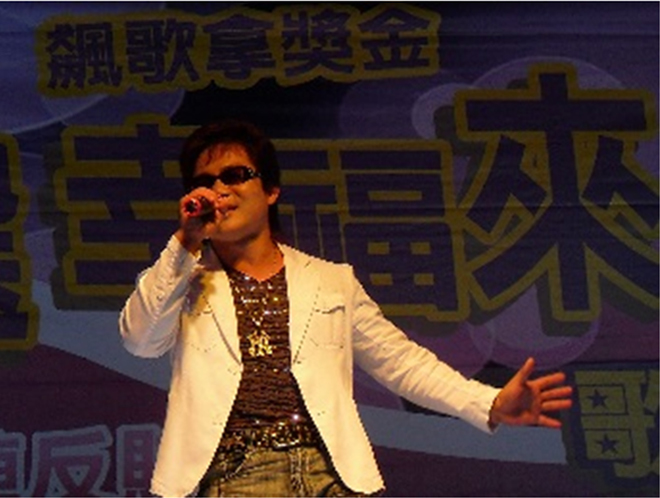

西絲朵拉公益大使 Charity Ambassador
西絲朵拉公益大使 —— 張振華

37歲的張振華自幼家境貧困，國三輟學北上工作，17歲那年在桃園工廠，被墜落的高壓電箱擊中頭部，前額頭骨破裂，一度被送入醫院太平間，家人意外發現手部微動，才又緊急喚來醫生救回性命，不過因眼球玻璃體切除、視網膜剝離，導致右眼全盲、左眼只見微光；視障3年後，又因腦幹感染病菌抽慉陷入昏迷，二度被醫師從鬼門關救回來。
張振華年幼即遭逢巨變，但他沒有喪志頹廢，反而毫不畏懼地接受生命挑戰。張振華說，為替儸癌父親擔起家計，視障後更勇敢面對人生。他參加職訓局按摩、醫學病理及復健等訓練，取得按摩技術士檢定，9年前和視障朋友在斗六市開設按摩中心，終於找到了新人生方向，【樂觀與自信】讓他奇蹟式地活下來。擁有天生好歌喉的張振華，在多次歌唱比賽中展露才華，經常受邀參加慈善義演，並與歌迷張惠卿結婚，愛妻成了他日常生活的眼睛。透過妻子從旁協助與視障輔助器材，學會了填詞譜曲及電腦修護，創作許多膾炙人口歌曲，其中一曲介紹雲林20鄉鎮市農產與文化的【雲林好所在】，深受縣長蘇治芬感動選為縣歌傳唱，他並連續5年參與雲林藝術行腳巡演，行銷雲林之美。
【感謝老天沒有讓我走，但活著就是一種責任，我必須勇敢地繼續走下去!】張振華以感恩的心積極回饋社會，經常和妻子及1對子女參與公益活動，以自身殘而不廢的故事，鼓勵弱勢走出陰霾，迎向陽光，他的勵志故事感染了許多人，優美歌聲更傳遍各公益場合。他並常到社區或安養老人免費按摩，唱歌給他們聽，把歡樂帶給大家。張振華也經常受邀到學校、監獄及社團演講生命教育，獲聘擔任雲林縣反賄選、反毒及消防宣導大使，他的奮鬥故事並被選為古坑鄉三峰國小生命教育教材，98年榮獲全國傑出青年菁英獎章及全國模範勞工，獲總統馬英九接見表揚，99年再獲選全縣好人好事代表等殊榮。
【跌倒了，就再爬起來，天無絕人之路!】張振華說，政府去年底開放明眼人也可以從事按摩業後，嚴重衝擊視障朋友之計，他勉勵身障朋友一定要學得一技之長，並隨時提升專業謀生技能與服務品質，一技在身，【明天一定會更好!】101年3月4日星期日於聯合報雲嘉B版。